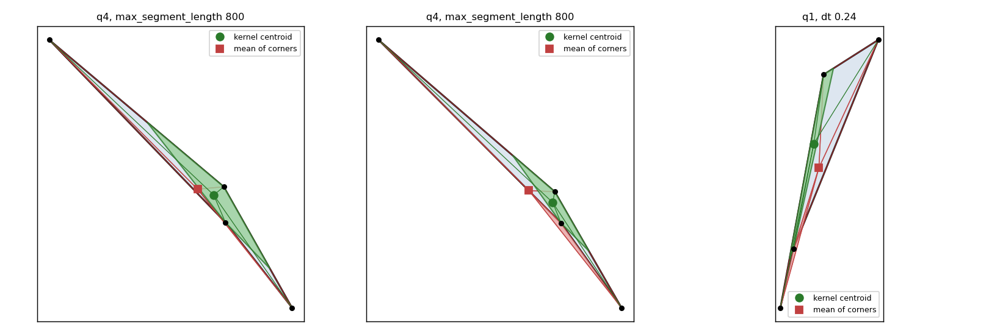
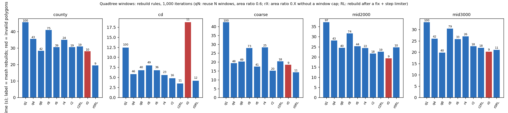
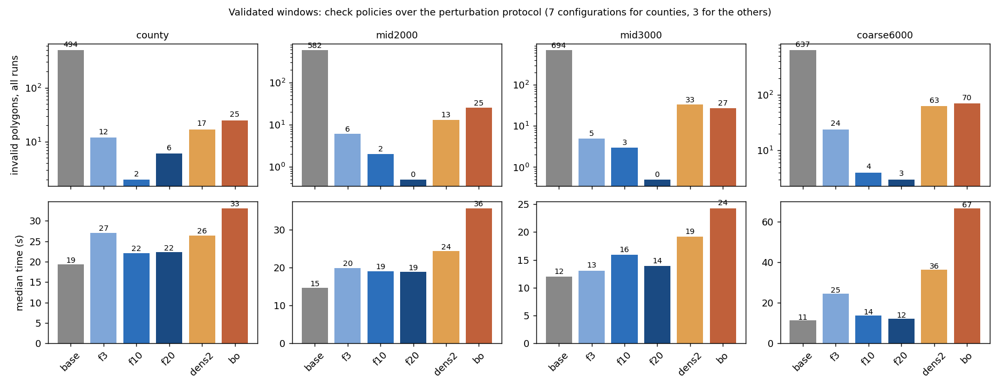

The inverted fan triangles of the quadtree mesh come from leaves squeezed into a sliver with a reflex corner, where the mean of the corners leaves the kernel of the leaf; placing the center in the kernel, rebuilding the mesh after a fix and limiting the nodes of unresolved leaves gives 0 inversions and 0 invalid polygons in 128 runs, and the substeps never repaired an inversion. No adaptive check interval for the validated windows (distance, segment length, backoff) beat a fixed 10 to 20 windows with a byte budget; frequent checks hurt. The quadtree needs no window parameter: rebuilding when a fix was needed or a triangle area falls below a ratio gives 9 to 12 rebuilds and 0 invalid on all five inputs.
Outcome (2026-10-26). The inversion fix (kernel centroid, rebuild after a fix, limiter) and the rebuild rule without a window parameter are in validity="repair-quadtree" (PR 181); the check interval of validity="repair-crossings" stays a fixed number of windows (validity_repair_every, default 10) with the memory budget validity_memory_mb as the hard bound (PR 180).
This page was written by the main session from the report of the research agent (the agent could not write the page itself). One configuration was reproduced: counties, r0RL (rebuild after a fix, limiter, kernel centroid, no substeps, area rule 0.001), 1,000 iterations: 19.6 s, 0 invalid, 9 rebuilds (report 19.5 s, 9 rebuilds); its mean error is 6.28 % because the run ends at the 8.5 km level (760 and 240 iterations), so the 1,000-iteration accuracy is budget-bound.
Reproduced (q1, dt 0.24, 1,000 iterations, DIAG=1): one inverted fan triangle at the full step; substeps of 2, 4, 8 and 16 did not remove it; 4 invalid polygons. The failing leaves (fig_leaf_kernel.png, dumps dump_q1_dt024.pkl, dump_q4_msl800.pkl) are plain four-node leaves squeezed to 10 to 36 % of their area into a sliver with one reflex corner: the mean of the corners lies outside the kernel (a thin wedge). pwo3.py implements:
dpall is the paper's version for every leaf and every iteration;Protocol (q1, q4, q8; seven configurations; 1,000 and 3,000 iterations; 41 or 42 runs per variant):
| variant | runs | runs with an inverted fan | inverted triangles | substep retries (all failed) | inversions left | invalid polygons |
|---|---|---|---|---|---|---|
| mean center + substeps | 42 | 3 | 5 | 5 | 5 | 6 (2 runs) |
| kernel, no substeps | 41 | 3 | 5 | 0 | 0 | 0 |
Stress without the area rule (reuse of 8 or 16 windows, dt 0.24, 0.30, 0.40, six configurations per remedy), invalid polygons (runs with any):
| remedy | invalid (runs) |
|---|---|
| old (mean center + substeps) | 209 (6) |
| kernel | 60 (6) |
| kernel + dp | 63 (6) |
| kernel + rebuild-on-fix | 9 (1) |
| dp | 1 (1) |
| limiter only | 26 (6) |
| kernel + rebuild-on-fix + limiter | 0 (0) |
| dp + limiter | 0 (0) |
dpall (one run): 8 invalid and 70 s against 57 to 60 s, not diagnosed.dp with the limiter works as well.vwa.py, runvwa.py. All runs: float32 fields, 128 MB budget (stored fields reach 133 MB), stop_rounds 3, minimum split length 1e-6, skip_s_cross. Policies: f1, f3, f10, f20 are fixed intervals in windows; d20 checks when the vertices have moved 20 cells; dens2 an interval from the density of the input segments; bo backoff (lengthen while checks find nothing, shorten after a repair); fb only at the budget; lazyu starts at 20 and halves after unresolved crossings. Invalid polygons / time in s, single runs, 1,000 iterations:
| input | base | f1 | f3 | f10 | f20 | dens2 | bo |
|---|---|---|---|---|---|---|---|
| counties | 57 / 19.5 | 0 / 39.5 | 0 / 26.5 | 0 / 22.8 | 0 / 23.0 | 1 / 27.7 | 2 / 32.5 |
| mid2000 | 170 / 18.4 | 7 / 29.4 | 2 / 20.3 | 0 / 22.1 | 0 / 15.8 | 5 / 25.0 | 4 / 48.5 |
| mid3000 | 194 / 11.3 | 0 / 16.5 | 0 / 12.6 | 0 / 15.5 | 0 / 11.5 | 7 / 15.3 | 0 / 18.2 |
| coarse3000 | 125 / 13.6 | 7 / 24.5 | 2 / 13.3 | 0 / 16.3 | not run | 7 / 22.3 | 6 / 24.1 |
| coarse6000 | 219 / 12.7 | 12 / 26.6 | 15 / 29.9 | 0 / 17.7 | not run | 5 / 27.1 | 8 / 29.2 |
| raw coarse | 327 / 10.1 | 72 / 74.7 | 6 / 12.2 | 15 / 24.6 | 9 / 12.8 | 78 / 70.4 | 100 / 147 |
fb is too lazy (1 to 2 invalid on counties, mid2000, coarse3000). d20 is identical to f10 (20 cells are reached after 10 windows of 10 iterations). lazyu equals f20 except coarse6000 (1 invalid) and raw coarse (10). On the tested coarse12000 input f3 and f10 give 6 invalid and fb 11; f1 and dens2 hung (killed after 19.6 and 8.5 min).| input | base | f3 | f10 | f20 | dens2 | bo |
|---|---|---|---|---|---|---|
| counties | 7 / 494 | 4 / 12 | 2 / 2 | 3 / 6 | 3 / 17 | 7 / 25 |
| mid2000 | 3 / 582 | 2 / 6 | 1 / 2 | 0 / 0 | 3 / 13 | 3 / 25 |
| mid3000 | 3 / 694 | 1 / 5 | 1 / 3 | 0 / 0 | 2 / 33 | 2 / 27 |
| coarse6000 | 3 / 637 | 3 / 24 | 2 / 4 | 2 / 3 | 3 / 63 | 3 / 70 |
Median times on the counties: base 19.3, f10 22.1, f20 22.3, f3 27.1, dens2 26.4, bo 33.1 s. Accuracy medians do not separate the policies (chaotic runs).
logs/hang_re1_f10.log, counties, recompute_every 1, f10): the flagged crossings grow 4, 24, 72 ... 7,164 over the checks and one check takes up to 18 s; the repairs do not resolve them. Library code needs a cap on the vertices inserted per check, or an abort.recompute_every sweep on the counties, invalid / time in s:
| recompute_every | base | f10 | f20 | d20 |
|---|---|---|---|---|
| 1 | 106 / 61 | killed (over 14 min) | 3 / 96 | 4 / 100 |
| 5 | 85 / 20 | 1 / 55 | 2 / 52 | 2 / 54 |
| 10 | 57 / 23 | 0 / 26 | 0 / 22 | 0 / 23 |
| 20 | 104 / 14 | 2 / 18 | 0 / 22 | 0 / 20 |
recompute_every 1, 5 and 10 and 55 to 94 MB at 20; the peak RSS is 1.13 to 1.19 GB against 0.96 GB for the baseline, independent of the rule: the byte budget bounds the memory. recompute_on_rise None, 0.01 and 0.05 gives 0 invalid for f10, f20, d20 and d40. The invalid count is not 0 at a recompute_every other than 10 under any rule.q1, q4 and q8 are caps in windows with the area rule 0.6; rX has no window cap and rebuilds when a triangle area falls below the fraction X of its build area; RL is rebuild-on-fix plus the limiter, without substeps; r0RL uses the area ratio 0.001. Time in s / rebuilds, 1,000 iterations, 0 invalid unless noted:
| input | q1 | q4 | q8 | r6 | r4 | r2RL | r0 (0.001, kernel + substeps) | r0RL |
|---|---|---|---|---|---|---|---|---|
| counties | 45.7 / 100 | 35.6 / 43 | 28.4 / 42 | 30.6 / 39 | 35.1 / 24 | 31.0 / 19 | 28.1 / 10, 5 invalid | 19.5 / 9 |
| districts | 12.4 / 100 | 5.8 / 46 | 6.8 / 40 | 6.8 / 36 | 5.6 / 23 | 3.5 / 11 | 18.7 / 11, 6 invalid | 4.2 / 12 |
| raw coarse | 42.4 / 100 | 19.4 / 48 | 20.3 / 49 | 17.5 / 41 | 28.3 / 25 | 20.4 / 18 | 18.5 / 9, 9 invalid | 14.2 / 11 |
| mid2000 | 37.1 / 97 | 28.1 / 43 | 24.5 / 40 | 25.3 / 44 | 24.4 / 22 | 22.6 / 19 | 19.3 / 9, 3 invalid | 24.7 / 10 |
| mid3000 | 33.2 / 100 | 26.0 / 42 | 19.8 / 40 | 25.8 / 33 | 27.0 / 26 | 21.9 / 18 | 20.2 / 9, 3 invalid | 21.0 / 11 |
| variant | time | rebuilds | mean error |
|---|---|---|---|
| q8 | 30.6 s | 39 | 5.15 % |
| r4 | 30.1 s | 24 | 3.39 % |
| r2RL | 26.0 s | 18 | 3.90 % |
| r0RL | 22.7 s | 10 | 3.71 % |
At 3,000 iterations (three runs per variant) q8 has a 150 s outlier with a lower error: mean 2.18 % against 3.3 to 3.5 % for the low-reuse rules; it is not known whether the low-reuse rules stall earlier.
recompute_every 1 / 5 / 10 / 20 on the counties, rebuilds / time: q8 152 / 130 s, 55 / 59 s, 42 / 31 s, 42 / 27 s; r4 57 / 141 s, 34 / 42 s, 24 / 35 s, 31 / 23 s; r2RL 38 / 110 s, 23 / 38 s, 19 / 31 s, 19 / 23 s. All 0 invalid. The q8 rebuild count depends on recompute_every (the cap is in windows); the area-rule counts vary by a factor of 2. recompute_on_rise None, 0.05 and 0.01 give identical or noise-level results. The quadtree mean error at recompute_every 1 is 0.10 to 1.0 %; validated windows reach 0.04 % but have 3 to 5 invalid polygons.Mostly single runs. The accuracy at the 1,000-iteration budget is chaotic. The 3,000-iteration comparison rests on three runs per variant. The analysis scripts and run.sh contain scratch paths of the session.
pwo3.py (_kernel_centroid, _fix_kernel, PWO3.advance, _unres_leaves; _dp_leaf optional), on top of pwo.py, pw.py, pw2.py.vwd.py and xing.py, with a guard on the vertices inserted per check.
A leaf whose fan inverts: the mean of the corners lies outside the kernel.

Rebuilds and time of the quadtree rebuild rules.

Invalid polygons and time of the check policies of the validated windows.